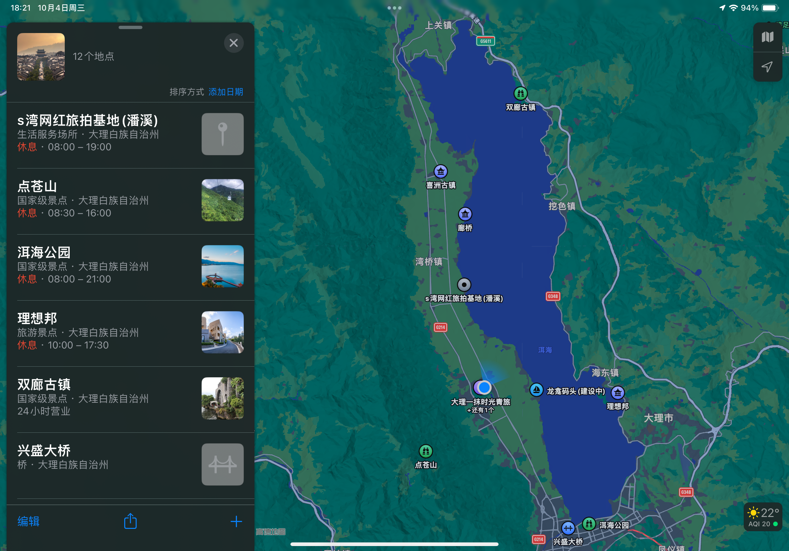

大理旅途流水账
旅途流水账
从成都南坐动车一路向南，路过西昌攀枝花到达昆明。从昆明转车在卧铺度过一夜，早点半小时到达大理。
2号在海的西侧。
第一天的早上先乘坐公交车到达大理古城放好行李，租上了电瓶车，便在风中雨中和阳光中上路了。一路向北，远远三塔等景区，到达了第一站，喜洲古镇然后扎染、走街串巷、图书馆便度过了早上的时光。
向南！首先去了廊桥，第一次接近了波涛汹涌的洱海 拍下了一组海边照片。而后因为日晒在咖啡馆慵懒的度过了中午。时辰尚早，增加了一个打卡地点，在紫外线中向南！到达了s湾，沿着海岸线，向南走又回，亦留下了许多照片。
向南，路过大理古镇来到市区边的兴盛大桥，一座欧式风格的大桥。随后按着日落时间和计划去到了龙龛码头。散步游玩等日落然后在漆黑中寻找电瓶车，然后在堵车中回到大理古城的宿舍，取行李放行李，集合还车，再散步到了接近凌晨。走路回住宿点，第一天便结束了。
3号在海的东侧
打车来到了海东北角的双廊古镇，一路散步，购买了一些礼品，吃了菌汤火锅。下午打车来到理想邦，在人群中上山，游览了美术馆，拍摄照片，而后做公交车去了洱海公园，然后爬上了这个市区中的高山，在山顶拍下了大理城市一面。而后坐公交(转车还坐过站了)回到了大理古镇。
4号是去苍山。
早上在出租车司机的好心的指导下，山下买了车票，直接坐班车来到了峰顶占道，在冰冷的风与云中，完成了接近四千米海拔的占道环游，又坐缆车来到半山腰看了泉(小山涧)后，沿着山路一路走，我独自走到了前面，再一道下山去了天龙八部影视城看了一出好戏。很累便又回到了古城，吃了手抓饭，买了鲜花回到客栈坐了坐遍返程了。

第一天遇到的法国一家人
也许是运气和缘分，与我们面对面而坐的是来自法国的小姑娘，相互赠送了简笔画……用英语交谈了几句，合影留念，并交换了邮箱……
希望能有联系吧……